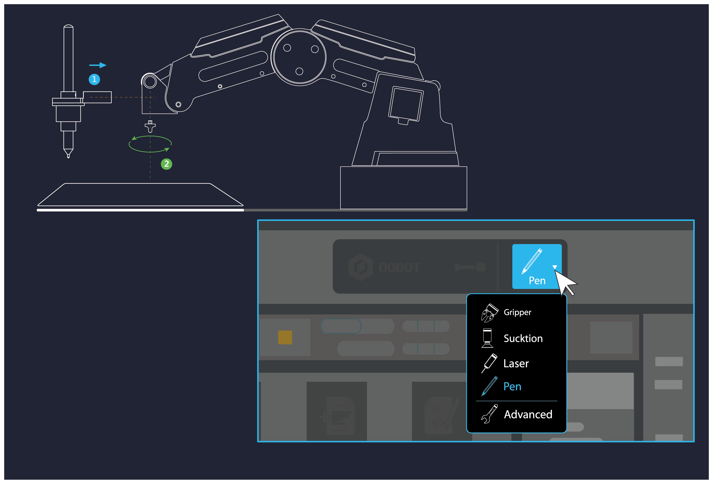
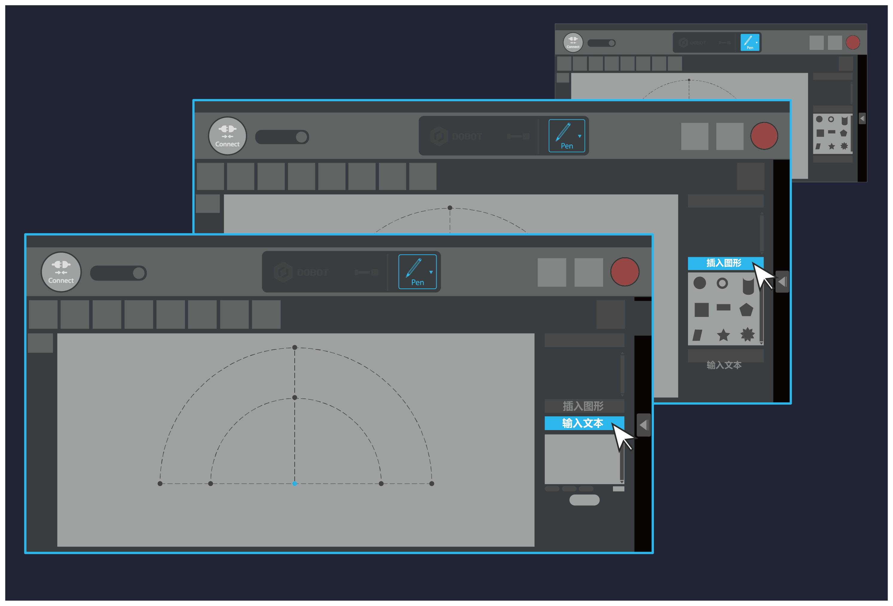
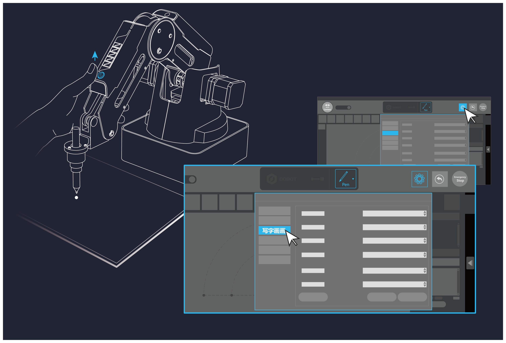
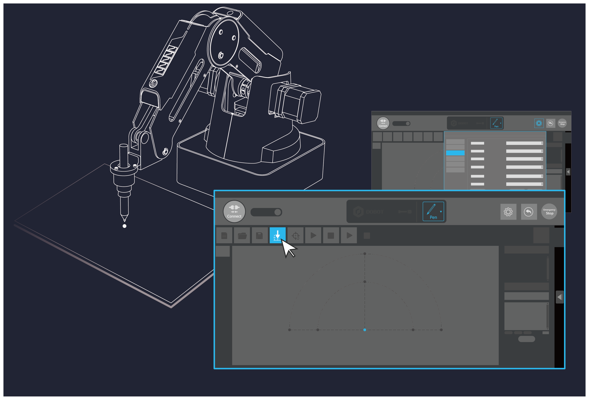

简体中文
简体中文
English
步骤一:安装写字画画套件，选择末端为笔

步骤二:插入DobotStudio软件自带的图案或者手动输入文字内容

步骤三:点击设置，进入写字画画设置（可以设置相应的速度和加速度，以及抬笔高度）；按住小臂上的圆形按钮Unlock key不放并拖动小臂将笔尖调整至写字纸平面上

步骤四:点击AutoZ获取并保存当前的Z值（保存的Z值，即设置中的下降位置参数），点击开始按钮即可开始写字

以后不再显示此向导